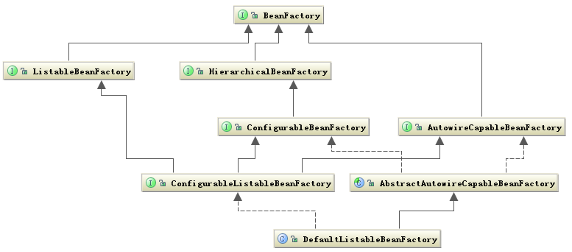
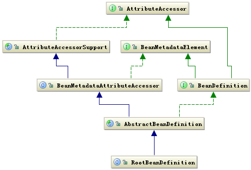

核心组件详解
这里将详细介绍每个组件内部类的层次关系，以及它们在运行时的时序顺序。
Bean组件
Bean组件在Spring的org.springframework.beans包下。这个包下的所有类主要解决了三件事：Bean的定义、Bean 的创建以及对Bean的解析。
SpringBean的创建时典型的工厂模式，他的顶级接口是BeanFactory，下图是这个工厂的继承层次关系：
图4.Bean工厂的继承关系

BeanFactory有三个子类：ListableBeanFactory、HierarchicalBeanFactory和Autowire Capable Bean Factory。
但是从上图中我们可以发现最终的默认实现类是DefaultListableBeanFactory，他实 现了所有的接口。那为何要定义这么多层次的接口呢？
查阅这些接口的源码和说明发现，每个接口都有他使用的场合，它主要是为了区分在Spring内部在操作过程中对象的传递和转化过程中，
对对象的 数据访问所做的限制。例如ListableBeanFactory接口表示这些Bean是可列表的，而HierarchicalBeanFactory表示的是这些Bean
是有继承关系的，也就是每个Bean有可能有父Bean。 AutowireCapableBeanFactory接口定义Bean的自动装配规则。这四个接口共同定义了
Bean的集合、Bean之间的关系、以及Bean行为。
Bean的定义主要有BeanDefinition描述，如下图说明了这些类的层次关系：

Bean的定义就是完整的描述了在Spring的配置文件中你定义的节点中所有的信息，包括各种子节点。当Spring成功解析你定义的一个节点后，
在Spring的内部他就被转化 成BeanDefinition对象。以后所有的操作都是对这个对象完成的。Bean的解析过程非常复杂，功能被分的很细，
因为这里需要被扩展的地方很多，必须保证有足够的灵活性，以应对可能的变化。Bean的解析主要就是对Spring配置文件的解析。这个解析
过程主要通过 下图中的类完成：